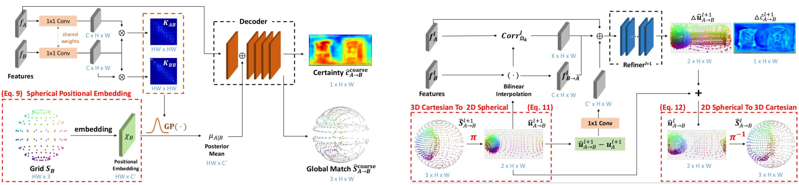

Our model architecture is inspired by designs of SOTA dense matching models, but re-designed for the distortion-awareness for omnidirectional images.
First, we propose a Spherical Spatial Alignment Module that utilizes Gaussian Process regression and spherical positional embeddings to establish 3D correspondences between omnidirectional images.
Second, we use Geodesic Flow Refinement by enabling conversions between coordinates to refine the displacement on the surface of the sphere.
Moreover, with azimuth rotation for data augmentation, we achieve state-of-the-art performance in dense matching and relative pose estimation between two omnidirectional images.